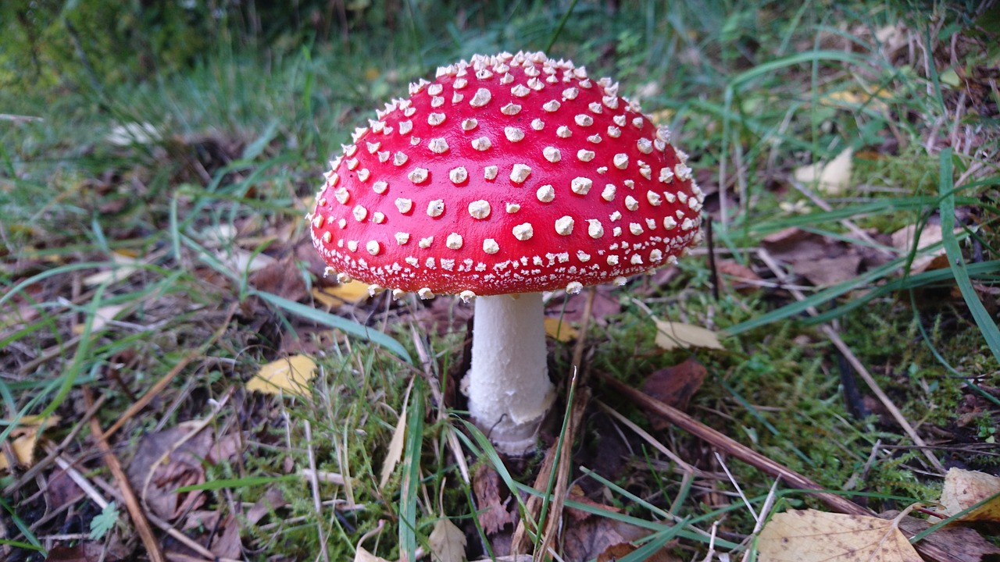

Don't Be Fooled!
Every year in ireland a shockingly high number of people are poisoned due to ingesting or skin contact of poisonous mushrooms. While most cause digestive irritation some are fatal and even experienced foragers can get it wrong sometimes so it really pays to know some of the common and easily recognisable species to avoid. Always seek immediate medical help if you feel ill after eating wild mushrooms. You should also wear gloves when handling mushrooms and don't touvh your face or eyes before washing your hands.
Fly Agaric
Description:
This is most peoples idea of a poinous mushroom probably because of it's unmistakable red cap with white flecks. It's evolved like this specifically to warn predators not to eat it although not all species of poisonous mushrooms have these warning signs. This particluar mushroom has been associated with myths and magic for centuries.
Season:
summer to autumn
Habitat:
birch forests
Symptoms:
It attacks the central nervous system causing halucinations and unpleasant intoxication which can up to 2 days to recover from but even then the poison stays in your months
Death Cap

Description:
One of the most fatal kinds that accounts for most of the fatal cases that occur each year it doesn't look particularily menacing with it's pretty, understated, pale cap 3-15cm across. It can offer appear greenish and the stalk is off-wite.This mushroom also has a sweet smell if you dare to get that close to it. The volval cap is also quite pronounced
Season:
summer to autumn
Habitat:
mixed deciduous amd coniferous woodland
Symptoms:
takes 10 to 24 hours for symptoms to appear, and the poison attacks the liver and kidneys causing acute organ failure. The first signs are diarrhoea and abdominal pain. If you can get to a hospital in time and they know you ingested a death cap you can be given carbo column dialysis which has saved a number of lives in recent years. The scariest part is that symptoms can seem to eleviate for a time but death from organ failure will occur suddenly afterwards if nothing is urgently done.
Common Ink Cap

Description:
This very interesting mushroom is the least toxic ont this list. It get's it's name from the use for hundreds of years by monks to produce a high quality ink that they would use to copy manuscripts. The cap is small and bell shaped and light brown in colour.The gills are white in young specimens and turn dark brown with age.
Season:
spring to late autumn
Habitat:
often found on rotting wood
Symptoms:
No to mild indegestion unless eaten with alcohol, then it results in the fast on set of heart palpitations, nausea, and stomach cramps although it is not known to be fatal. It was used for many years in this capacity as a treatment for alchoholics.